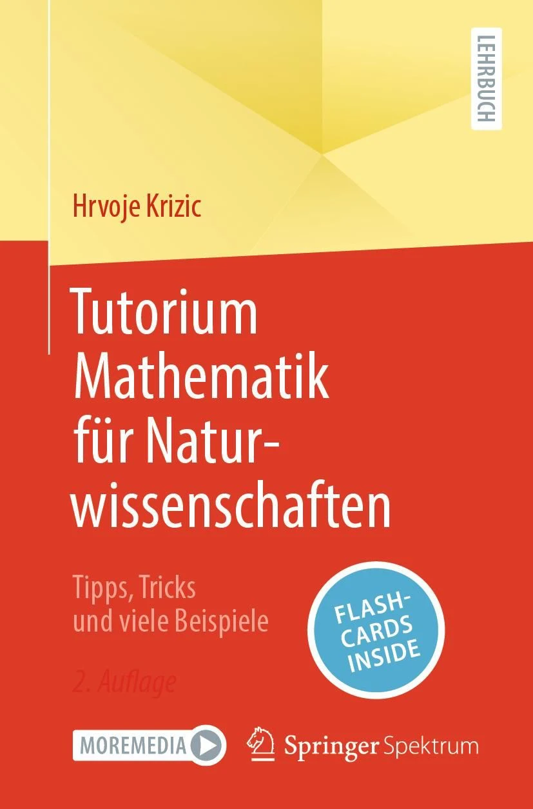

Teaching
I have taught mathematics at ETH Zurich as a teaching assistant since 2021. Where would you like to go?

The book
Tutorium Mathematik für Naturwissenschaften
Tipps, Tricks und viele Beispiele · Springer Spektrum, 2024
For students who do not study mathematics as their main subject but still have to master the mathematics courses of their degree. The theory is explained intuitively and reduced to the essentials without losing depth, with schemes, tricks and many worked examples, from linear algebra to integration. The book is written in German and comes with flashcards.